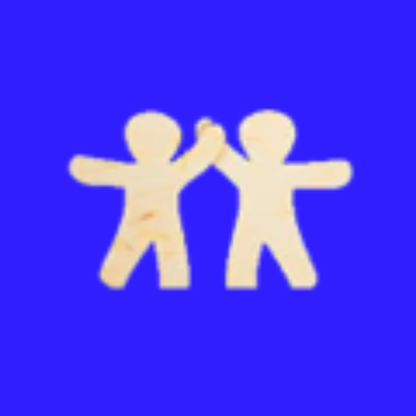
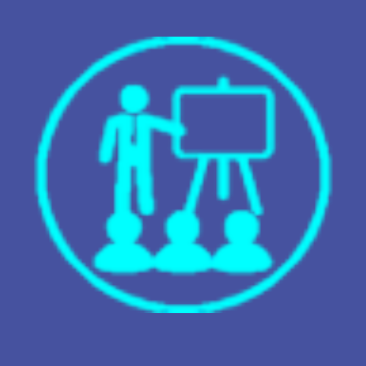
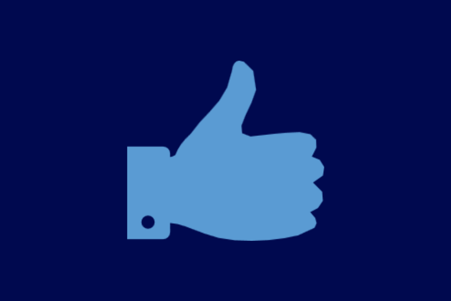

Relationship untuk karyawan
Karyawan PT. Binakarya Sinergi Nusantara (BSN) yang didedikasikan sebagai mediator antara
user dan karyawan outsourcing BSN yang menjembatani dalam hal pemenuhan kebutuhan
evaluasi performance serta menjaga agar kerjasama terjalin dengan baik.
Administration
Berfungsi mengadministrasikan daftar kehadiran/absensi, cuti, entry data, daily
performance, delivering report for basic allowance and shift allowance, atau semua hal
yang berhubungan dengan ketenagakerjaan.

Training bagi karyawan
Training yang akan difasilitasi oleh kami berupa soft skill training seperti halnya Selling
and motivation skill, positive mental attitude dan sebagainya.

Reward & Retention Program
Program pemberian hadiah bagi karyawan yang berprestasi dapat diberikan
sesuai kesepakatan dengan klien
Program Gathering, Team Building, Outing dilaksanakan secara reguler sesuai
kebutuhan